Sensitivity analysis
MGMT 306
Purdue University
Guiding questions
- Can small changes to LP model change the solution by a lot?
- If parameters change, can we skip re-solving the LP model?
- If parameters are estimated incorrectly, how does that affect our decisions?
- “What if …?” analysis
Options
- Completely re-solve the model
- Sometimes this is the only option
- However, it is time consuming and often unnecessary
- Sensitivity analysis
- Use Excel’s Sensitivity Report
- Possible to determine how optimal solution and optimal objective value are affected by small changes in model
- Without having to re-solve LP
Sensitivity analysis
Can be used to answer two types of questions:
- How does optimal solution and optimal objective value change if
- One objective function coefficient is changes? Or,
- One constraint right-hand side (RHS) changes?
Note: only one change
Example: Fresh Farms
Problem Description
- Fresh Farms owns 60 acres of land. They can plant either wheat or corn. Based on current predictions, wheat will yield a profit of $200/acre while corn yields a profit of $300/acre
- Each planted acre uses fertilizer and labor: wheat using 2 tons of fertilizer and 3 hours of worker time; corn using 4 tons of fertilizer and 2 hours of worker time
- There are 120 tons of fertilizer and 100 hours of worker time available
- How should Fresh Farms divide their land?
LP Model
Variables \[\begin{aligned} &w&&\text{acres of wheat to plant}\\ &c&&\text{acres of corn to plant}\\ \end{aligned}\]
Model \[\begin{aligned} \max\quad&200 w + 300c&&\text{(profit)}\\ \text{s.t.}\quad& 2w + 4c \leq 120 && \text{(fertilizer)}\\ & 3w + 2c \leq 100 && \text{(labor)}\\ & w + c \leq 60 && \text{(land)}\\ & w,c\geq 0 && \text{(nonnegativity)} \end{aligned}\]
Graphical Solution

Spreadsheet Solution
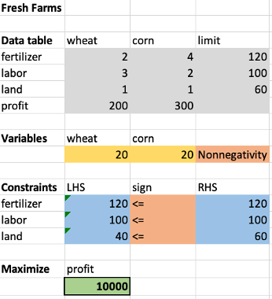Changing one objective coefficient
e.g., “What if profit per acre of corn changes next month?”
Changing one objective function coefficient
- Suppose we change the unit profit of wheat and re-solve the LP for each possible value of the profit coefficient. We would see the plot below:
- Near the current coefficient, the optimal total profit varies linearly.
- We can learn most of this information from the sensitivity report without re-solving
Original model
Changing the coefficient in the objective function changes the slope of the objective function line
\[\begin{aligned} \max\quad&200 w + 300c&&\\ \text{s.t.}\quad& 2w + 4c \leq 120 && \\ & 3w + 2c \leq 100 && \\ & w + c \leq 60 && \\ & w,c\geq 0 && \end{aligned}\]
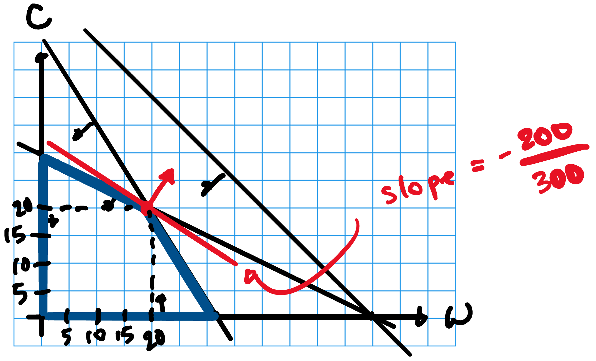
Behavior under “small” change in objective coefficient
\[\begin{aligned} \max\quad&{\color{red}300} w + 300c&&\\ \text{s.t.}\quad& 2w + 4c \leq 120 && \\ & 3w + 2c \leq 100 && \\ & w + c \leq 60 && \\ & w,c\geq 0 && \end{aligned}\]
- Optimal solution does not change
- What is the change in optimal value? \[\begin{aligned} &\text{(change in unit profit wheat)} \times \text{(acres of wheat in opt. sol.)}\\ &= 100 \times 20 = 2000 \end{aligned}\]
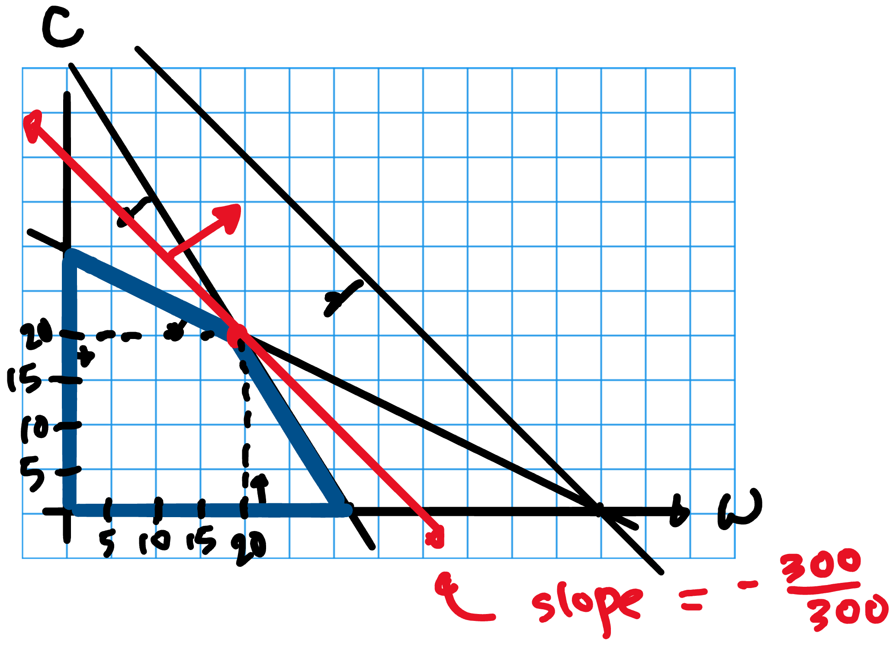
Behavior under “large” change in objective coefficient
\[\begin{aligned} \max\quad&{\color{red}600} w + 300c&&\\ \text{s.t.}\quad& 2w + 4c \leq 120 && \\ & 3w + 2c \leq 100 && \\ & w + c \leq 60 && \\ & w,c\geq 0 && \end{aligned}\]
- Optimal solution changes
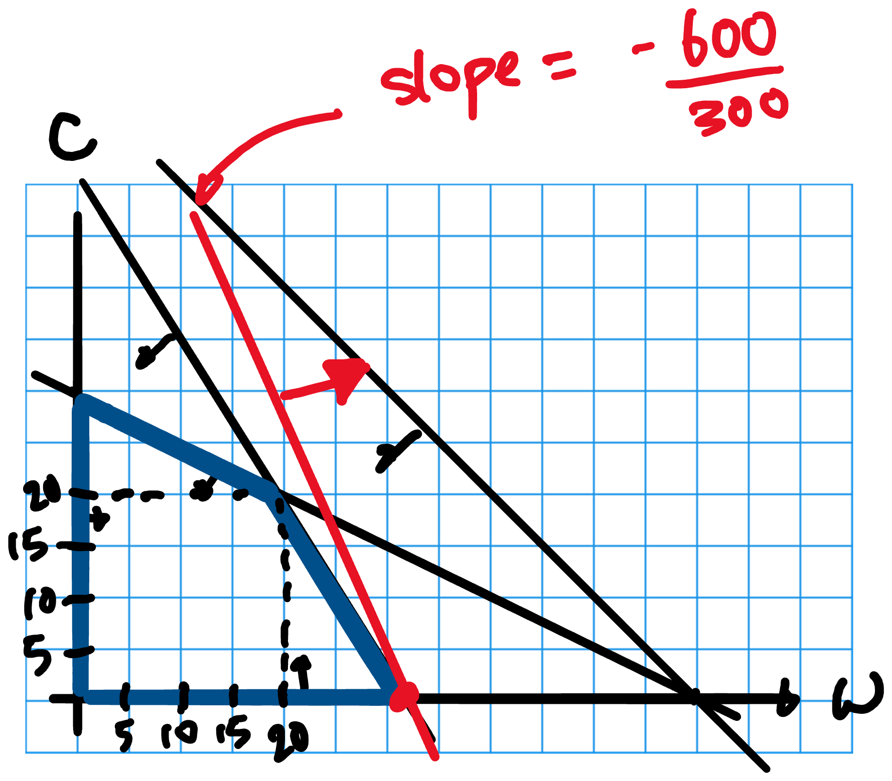
What did we see?
- If change in objective coefficient is small enough, then optimal solution does not change and we can determine the change in optimal value
- How small is small enough? See the Sensitivity Report
Objective function coefficient: Range of optimality
- Range of optimality:
- In Sensitivity Report, each variable has an Objective Coefficient, Allowable Increase, and Allowable Decrease
- The Range of Optimality is an interval on the number line, e.g., think \([0,2]\), \([-1,0.5]\), \([500,\infty)\)
- The left endpoint is: Objective coefficient - Allowable Decrease
- The right endpoint is: Objective coefficient + Allowable Increase
- Sensitivity Analysis Fact 1. If the only thing that changes in an LP model is the coefficient of one decision variable and the new coefficient is in the range of optimality, then the optimal solution stays the same.
Practice: Range of Optimality and Optimal Solution
Does the optimal solution stay the same if the objective function changes to:
- \({\color{red}150} w + 300 c\)
- \({\color{red}450} w + 300 c\)
- \({\color{red}460} w + 300 c\)
- \(200 w + {\color{red}500} c\)
- \(200 w + {\color{red}200} c\)
- Same
- Same
- Change
- Change
- Same
Predicting the new optimal value
- Sensitivity Analysis Fact 2. If the only thing that changes in an LP model is the coefficient of one decision variable and the new coefficient is in the range of optimality, then \[\text{(change in opt val)} = \text{(change in obj coeff)} \times \text{(var val in opt sol)}\]
Practice: Range of Optimality and Optimal Value
How does the optimal objective value change?
- \({\color{red}150} w + 300 c\)
- \({\color{red}450} w + 300 c\)
- \({\color{red}460} w + 300 c\)
- \(200 w + {\color{red}500} c\)
- \(200 w + {\color{red}200} c\)
- Change of \((-50)(20)=-1000\)
- Change of \((250)(20)=5000\)
- Can’t say anything yet
- Can’t say anything yet
- Change of \((-100)(20)=-2000\)
Recap
- What is the range of optimality for a variable?
- If the only thing that changes is the coefficient of one decision variable, and new coefficient is in range of optimality:
- What is the new optimal solution?
- What is the new optimal value?
Changing one constraint RHS
e.g., “What if available fertilizer changes next month?”
Changing one constraint RHS
- Suppose we change the fertilizer availability and re-solve the LP for each possible value of the RHS. We would see the plot below
- Near the current RHS, the optimal total profit varies linearly.
- We can learn most of this information from the sensitivity report without re-solving
Original Model
Changing a constraint RHS changes the position (but not the slope) of a constraint
\[\begin{aligned} \max\quad&200 w + 300c&&\\ \text{s.t.}\quad& 2w + 4c \leq 120 && \\ & 3w + 2c \leq 100 && \\ & w + c \leq 60 && \\ & w,c\geq 0 && \end{aligned}\]
Binding constraints: fertilizer and labor
Behavior under “small” change in constraint RHS
\[\begin{aligned} \max\quad&200 w + 300c&&\\ \text{s.t.}\quad& 2w + 4c \leq {\color{red}160} && \\ & 3w + 2c \leq 100 && \\ & w + c \leq 60 && \\ & w,c\geq 0 && \end{aligned}\]
Binding constraints: still fertilizer and labor!
Which constraints are binding have not changed
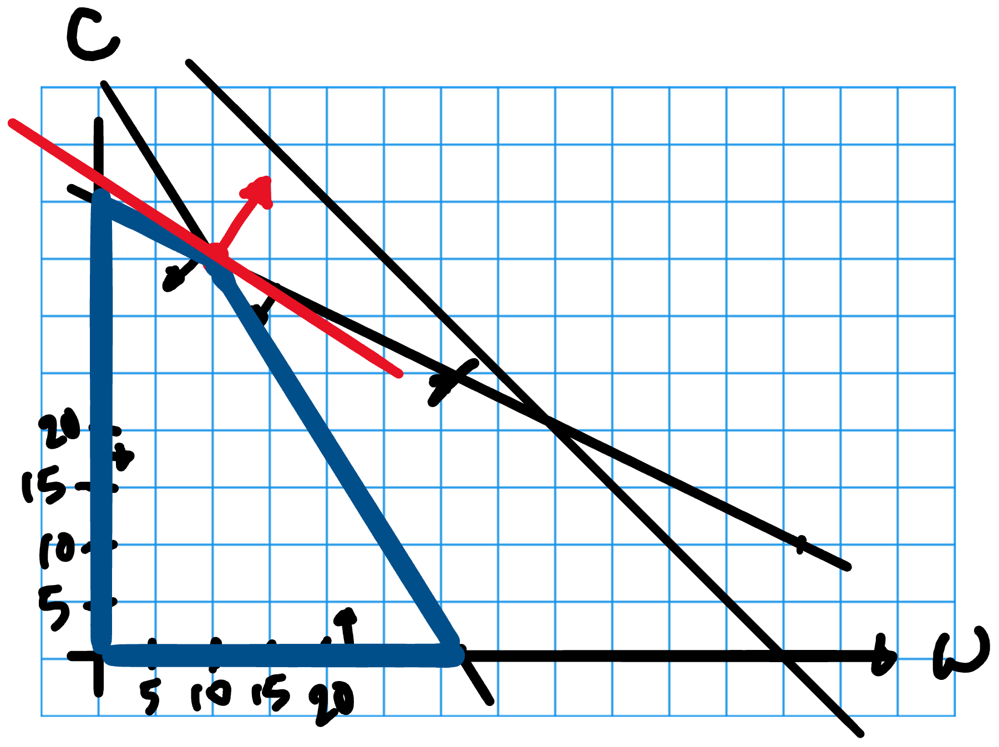
Behavior under “large” change in constraint RHS
\[\begin{aligned} \max\quad&200 w + 300c&&\\ \text{s.t.}\quad& 2w + 4c \leq {\color{red}300} && \\ & 3w + 2c \leq 100 && \\ & w + c \leq 60 && \\ & w,c\geq 0 && \end{aligned}\]
Binding constraints have changed
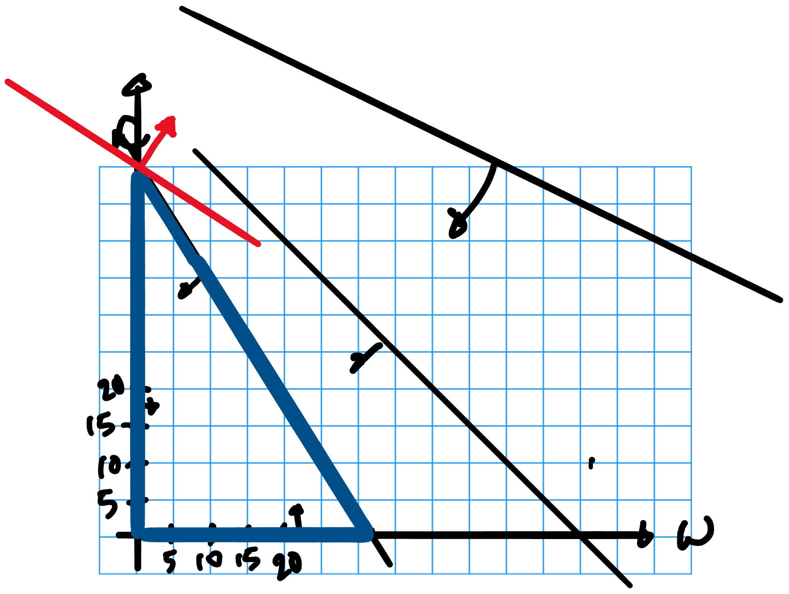
What did we see?
- If the change is small enough, then which constraints are binding/not binding do not change
- How small is small enough? See the Sensitivity Report
Constraint RHS: Range of feasibility
- Range of feasibility:
- In Sensitivity Report, each constraint has a Constraint R.H. Side, Allowable Increase, Allowable Decrease
- The Range of Feasibility is an interval on the number line, e.g., think \([0,2]\), \([-1,0.5]\), \([500,\infty)\)
- The left endpoint is: Constraint R.H.S - Allowable Decrease
- The right endpoint is: Constraint R.H.S + Allowable Increase
- Sensitivity Analysis Fact 3. If the only thing that changes in an LP model is the RHS of one constraint and the new RHS is in the range of feasibility, then which constraints are binding do not change
Practice: Range of Feasibility and Binding Constraints
Do the binding constraints stay the same or change if we change:
- Fertilizer RHS to \({\color{red}60}\)
- Fertilizer RHS to \({\color{red}200}\)
- Labor RHS to \({\color{red}120}\)
- Land RHS to \({\color{red}200}\)
- Land RHS to \({\color{red}30}\)
- Change
- Same
- Same
- Same
- Change
Finding the new optimal solution
- Sensitivity Analysis Fact 4. Suppose change in constraint RHS is in range of feasibility
- If the change happened to a non-binding constraint, then the binding constraints have not changed. Thus, optimal solution and optimal value are the same.
- If the change happened to a binding constraint, then optimal solution may change, and we need to re-solve the linear system (for the binding constraints).
Practice: Range of Feasibility and Optimal Solution
Does the optimal solution stay the same if we change:
- Fertilizer RHS to \({\color{red}60}\)
- Fertilizer RHS to \({\color{red}200}\)
- Labor RHS to \({\color{red}120}\)
- Land RHS to \({\color{red}200}\)
- Land RHS to \({\color{red}30}\)
- Outside RoF
- Opt soln changes
- Opt soln changes
- Opt soln stays same
- Outside RoF
Predicting the new optimal value
- Sensitivity Analysis Fact 5. Suppose change in constraint RHS is in range of feasibility. Then, \[\text{(change in opt val)} = \text{(change in RHS)} \times \text{(shadow price)}\]
- Shadow price is the marginal value of an extra unit of resource currently
- This shadow price remains valid within the range of feasibility
- This number is calculated by the solver in the sensitivity report
- Shadow price of a non-binding constraint will be zero (why?)
Practice: Range of Feasibility and Optimal Value
What is the change in optimal value if we change:
- Fertilizer RHS to \({\color{red}60}\)
- Fertilizer RHS to \({\color{red}200}\)
- Labor RHS to \({\color{red}120}\)
- Land RHS to \({\color{red}200}\)
- Land RHS to \({\color{red}30}\)
- Outside RoF
- \(80 \times 62.5 = 5000\)
- \(20\times25=500\)
- \(140\times 0 = 0\)
- Outside RoF
Recap
Should know:
- What is the range of feasibility for a constraint?
- What is the shadow price of a constraint?
- If the only thing that changes is the RHS of one constraint and the new RHS is in the range of feasibility:
- Does the new optimal solution stay the same/change?
- What is the new optimal value?
Practice: Electro-poly
Sensitivity Analysis Facts 1–5
Problem Description
- Electro-poly is a leading manufacturer of slip-rings
- A $750,000 order has been received for various models of slip-rings
- The company has 10,000 hours in wiring capacity and 5,000 hours of harnessing capacity
- Using an LP model, decide how many of each model of slip ring to buy/make to minimize cost
| Model 1 | Model 2 | Model 3 | |
|---|---|---|---|
| Number ordered | 3000 | 2000 | 900 |
| Hours of wiring/unit | 2 | 1.5 | 3 |
| Hours of harnessing/unit | 1 | 2 | 1 |
| Cost to make | 50 | 83 | 130 |
| Cost to buy | 61 | 97 | 145 |
LP Model Variables
Variables \[\begin{aligned} & m_1 &&\text{number of model 1 slip ring to make}\\ & m_2 &&\text{number of model 2 slip ring to make}\\ & m_3 &&\text{number of model 3 slip ring to make}\\ & b_1 &&\text{number of model 1 slip ring to buy}\\ & b_2 &&\text{number of model 2 slip ring to buy}\\ & b_3 &&\text{number of model 3 slip ring to buy} \end{aligned}\]
or
\[\begin{aligned} & m_i &&\text{number of model $i$ slip ring to make for $i=1,2,3$}\\ & b_i &&\text{number of model $i$ slip ring to buy for $i=1,2,3$}\\ \end{aligned}\]
LP Model Objective and Constraints
Objective \[\min\quad 50 m_1 + 83 m_2 + 130 m_3 + 61 b_1 + 97 b_2 + 145 b_3 \quad\text{(tot. cost)}\]
Constraints \[\begin{aligned} & m_1 + b_1 = 3000 &\text{(model 1 order)}\\ &m_2 + b_2 = 2000 &\text{(model 2 order)}\\ &m_3 + b_3 = 900 &\text{(model 3 order)}\\ &2 m_1 + 1.5 m_2 + 3 m_3 \leq 10000 &\text{(wiring capacity)}\\ &1 m_1 + 2 m_2 + 1 m_3 \leq 5000 &\text{(harnessing capacity)}\\ &m_i , b_i \geq 0 \quad\text{for $i = 1,2,3$} &\text{(nonnegativity)} \end{aligned}\]
Spreadsheet solution
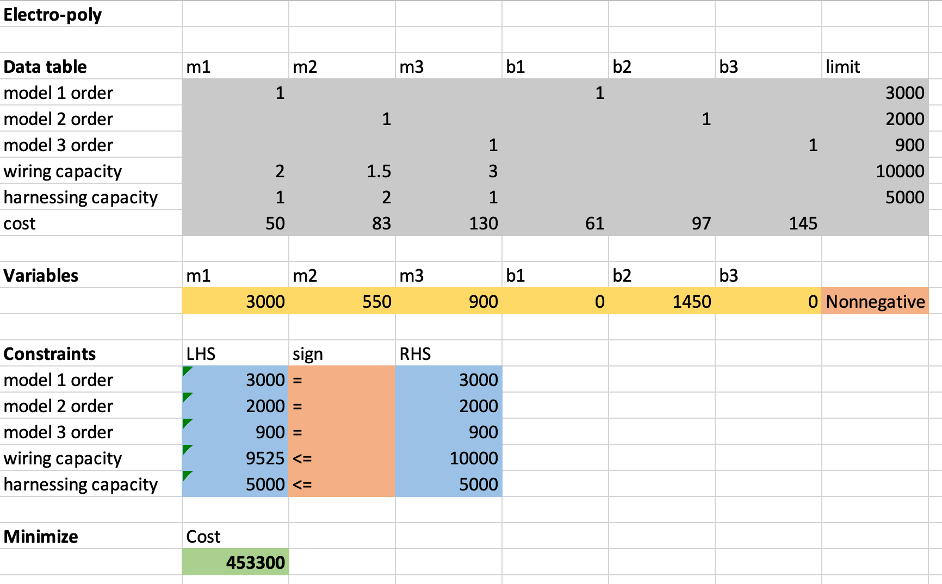Sensitivity Report
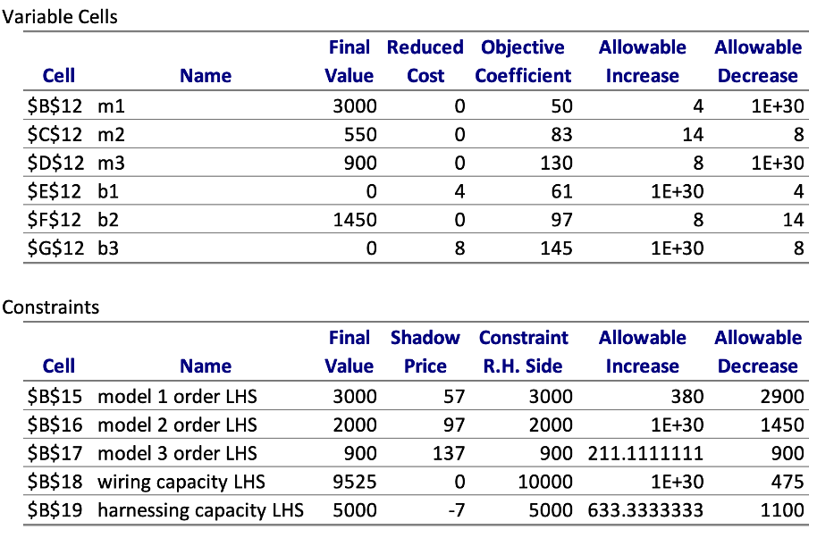Practice: Sensitivity Analysis Question 1
Question. What would happen to the optimal solution, optimal objective value if wiring capacity decreases to 9600?
Solution.
- The wiring capacity constraint is non-binding and its range of feasibility is \([9525,\infty]\)
- 9600 is in the range of feasibility
- So, the optimal solution and optimal value do not change
Practice: Sensitivity Analysis Question 2
Question. What would happen to the optimal solution, optimal objective value if harnessing capacity decreases by 100 hours?
Solution.
- The harnessing capacity constraint is binding and its range of feasibility is \([3900, 5633.33]\)
- If the harnessing capacity decreases by 100, then \(5000 - 100\) is in range of feasibility so the binding constraints do not change
- Harnessing capacity is a binding constraint so the optimal solution changes
- The optimal value changes by \((-7)\cdot(-100)\), i.e., the cost increases by 700.
Practice: Sensitivity Analysis Question 3
Question. The order changes to 100 additional units of model 3. What is the additional cost per unit of the extra model 3s?
Solution.
- An increase of 100 is within the allowable increase for the model 3 order constraint
- Thus, each additional unit will cost the shadow price of the model 3 constraint to produce, i.e., $137/unit.
Practice: Sensitivity Analysis Question 4
Question. The company can increase harnessing time by scheduling overtime at a cost of $10 per hour. If overtime is available up to 200 hours, should the company use overtime? If yes, how much overtime should the company use?
Solution.
- The shadow price of the harnessing constraint is -7
- This tells us that each hour of overtime would decrease the cost by 7 dollars
- Electro-poly should not schedule any over time.
Practice: Sensitivity Analysis Question 5
Question. What if the cost of overtime is $6 per hour?
Solution.
- The shadow price of the harnessing constraint is -7 and the range of feasibility is [3900, 5633.33]
- The shadow price formula tells us that each hour of overtime (up to the first 633.33 hours) decreases the net cost by 1 dollar
- They should use all of the available overtime.
Practice: Sensitivity Analysis Question 6
Question. At what cost would the company be willing to buy any of Model 1?
Solution.
- The cost to buy a model 1 needs to decrease to $57 dollars before Electro-poly will consider buying any of model 1s.
Practice: Sensitivity Analysis Question 7
Question. At what cost of making Model 1 would lead the company to making fewer units of Model 1?
Solution.
- The cost of making a model 1 needs to increase to $54 dollars before Electro-poly should consider making fewer model 1s.
Practice: Tijerina Tablets
Sensitivity Analysis Facts 1–5
Problem Description
- See Chapter 3, Problem 1
LP Model
- Variables: \[\begin{aligned} &M &&\text{units of mini model to assemble}\\ &P &&\text{units of professional model to assemble} \end{aligned}\]
- Objective: \(\max \quad 180 M + 200 P \quad\text{(profit)}\)
- Constraints: \[\begin{aligned} &P \geq 30 &&\text{(contract)}\\ &6 M + 3 P \geq 150 &&\text{(assembly time lower bound)}\\ &6 M + 3 P \leq 300 &&\text{(assembly time upper bound)}\\ &1 M + 1.5 P \leq 90 &&\text{(install/QA time upper bound)}\\ &P, M \geq 0 &&\text{(nonnegativity)} \end{aligned}\]
Spreadsheet Formulation
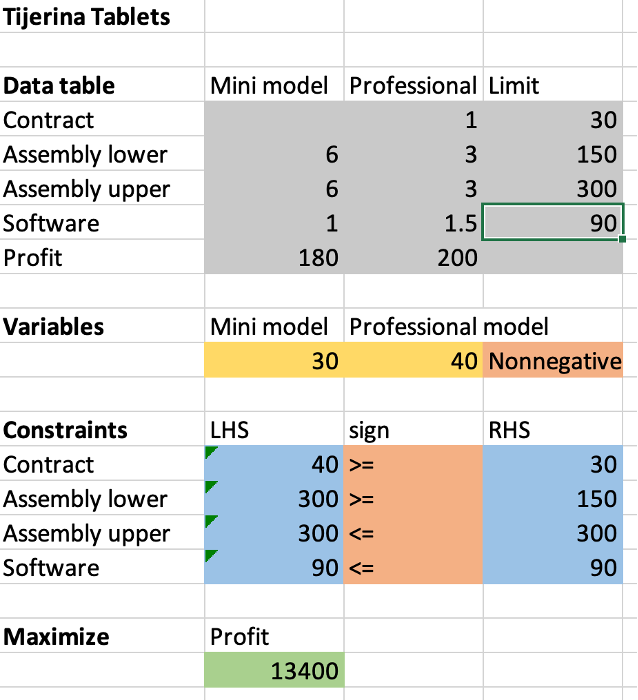Sensitivity Report
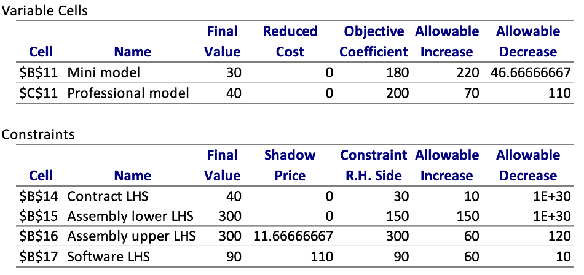Practice: Sensitivity Analysis Question 1
Question. At what minimum profit per unit should Tijerina consider producing more professional models?
Solution.
- The range of optimality for professional models is [90, 270]
- Thus, Tijerina should not change their production plan unless the profit per unit of professional models reaches $270.
Practice: Sensitivity Analysis Question 2
Question. It costs $300 to rent the assembly equipment for 30 additional hours. Should Tijerina Tablets pay for 30 additional hours of assembly?
Solution.
- What would happen if we make this change?
- The RHS of the upper bound on assembly time changes from 300 to 330
- The range of feasibility for the assembly time upper bound constraint is [180,360]
- As 330 is in the range feasibility, the optimal objective value increases by 30 * 11.66 = $350
- Accounting for the $300 to rent, this is a net profit of $50
Practice: Sensitivity Analysis Question 3
Question. Tijerina can choose to pay a penalty of $1,000 to renege on their contract with the local vendor. Should they fulfill the original contract? Yes/No?
Solution.
- What would happen if we renege?
- \(p\geq 30\) constraint becomes \(p\geq 0\)
- The range of feasibility for the contract constraint is [-∞, 40]
- As 0 is in the range of feasibility, the shadow price formula predicts \(0 \cdot(-30) = 0\) change in profit
- Accounting for the $1,000 penalty, this is a net loss of $1000
- We should fulfill the original contract
Changing nonnegativity
Shadow price on nonnegativity constraints
Alfalfa shows up to Fresh Farms
- Alfalfa is the new “it” health food
- Alfalfa requires 2 tons of fertilizer per acre and 3 hours of labor per acre
- The profit for alfalfa is currently $150/acre
- Fresh Farms updates their LP model, solves it, and sees that they should not plant any alfalfa
- How high does the profit for alfalfa need to be for Fresh Farms to consider planting alfalfa?
LP Model
Variables \[\begin{aligned} & w && \text{acres of wheat to plant}\\ & c && \text{acres of corn to plant}\\ & a && \text{acres of alfalfa to plant} \end{aligned}\]
Model \[\begin{aligned} \max\quad& 200w+300c+150a && \text{(profit)}\\ \text{s.t}\quad& 2w+4c+2a\leq 120 && \text{(fertilizer)}\\ & 3w+2c+3a\leq 100 && \text{(labor)}\\ & w+c+a\leq 60 && \text{(land)}\\ &w,c,a\geq 0 && \text{(nonnegativity)} \end{aligned}\]
Spreadsheet Model
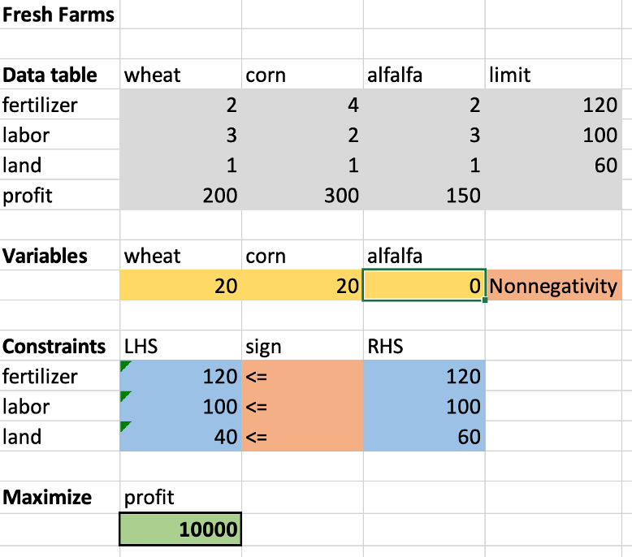Sensitivity Report
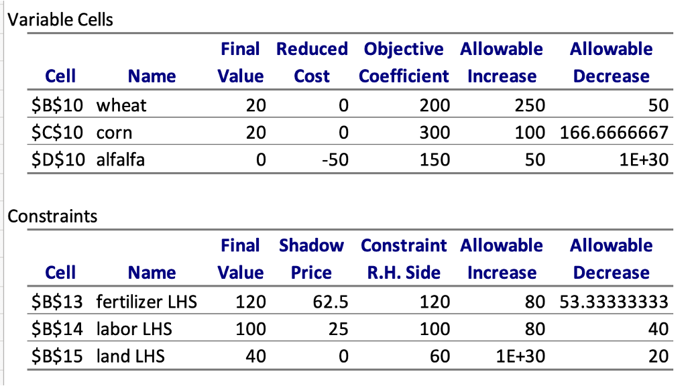Reduced cost
- What happens if we change right hand side of nonnegativity constraint?
- \(a \geq 0\) to \(a \geq 1\)?
- Reduced cost is the shadow price for a nonnegativity constraint
- How to interpret this:
- For a variable that is positive in the optimal solution: Reduced cost is zero
- For a variable that is zero in the optimal solution: Reduced cost is change in unit profit necessary for that good to be economically lucratice
Reduced cost example
- Reduced cost of Alfalfa is \(-50\)
- If the unit profit for Alfalfa increases by $50, then Fresh Farms should convert some of its wheat/corn production to alfalfa production
- Note that reduced cost of wheat and corn are zero (they are already positive at the optimal solution)
Changes outside of range of optimality or range of feasibility
Change in objective coefficient: Original model
Behavior under “small” change in objective coefficient
Behavior under “large” change in objective coefficient
Changes to objective coeff. inside range of optimality
- Inside range of optimality, \[\text{change in opt val} = \text{change in coeff} \times \text{value of variable}\] We got this formula by assuming the optimal solution does not change
Changes to objective coeff. outside range of optimality
- Sensitivity Analysis Fact 6. Outside range of optimality, the optimal solution does better than our old solution
- For a maximization problem \[\text{change in opt val} \geq \text{change in coeff} \times \text{value of variable}\]
- For a minimization problem \[\text{change in opt val} \leq \text{change in coeff} \times \text{value of variable}\]
Example: Optimal Total Profit vs. Unit Profit on Wheat
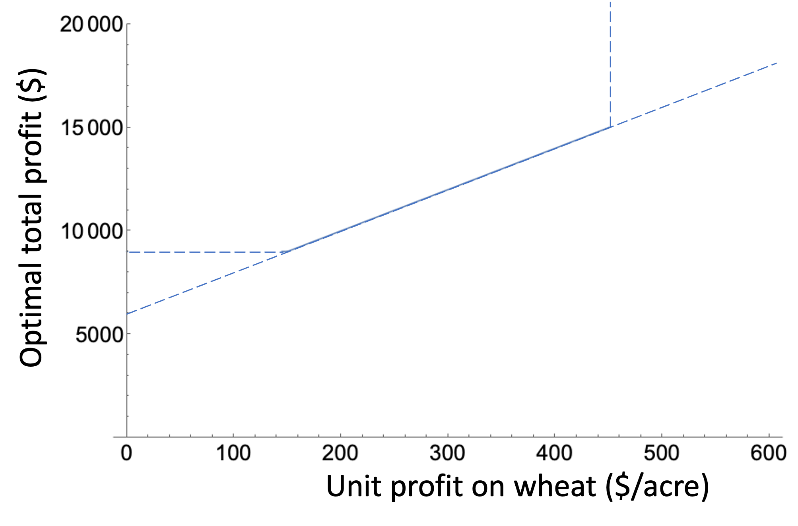Change in constraint RHS: Original model
Behavior under “small” change in constraint RHS
Behavior under “large” change in constraint RHS
Changes to constraint RHS inside range of feasibility
Inside range of feasibility, \[\text{change in opt value} = \text{change in RHS} \times \text{shadow price}\]
This formula assumes that the binding constraints do not change
Changes to constraint RHS inside range of feasibility
- Sensitivity Analysis Fact 7. Outside range of feasibility, the optimal solution has to deal with new constraints so does worse than the exact equation
- For a maximization problem \[\text{change in opt value} \leq \text{change in RHS} \times \text{shadow price}\]
- For a minimization problem \[\text{change in opt value} \geq \text{change in RHS} \times \text{shadow price}\]
Example: Optimal Total Profit vs. Fertilizer Availability
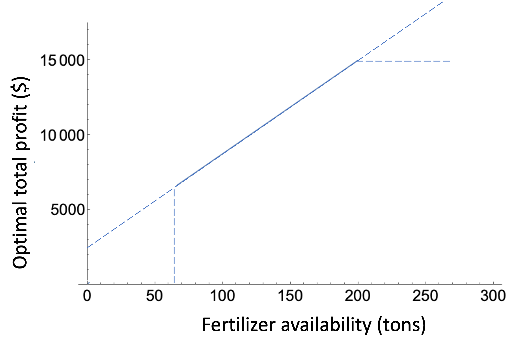Practice
Sensitivity Analysis Facts 6, 7
Tijerina Tablets: Problem 1
Question. One of your employees calls in sick. As a result, the available hours for software installation decreases from 90 to 70. What impact will this have on the optimal solution and optimal objective value?
Answer.
- This changes the RHS of the software installation constraint from 90 to 70
- The range of feasibility for the software installation constraint is [80,150]
- As 70 is not in the range of feasibility, the binding constraints will change and the optimal solution will change
- As 70 is not in the range of feasibility, the shadow price formula is overly optimistic. The change in optimal value is ≤ (-20) * 110 = -2200
Electro-poly: Problem 1
Question. What would happen to the optimal solution, optimal objective value if wiring capacity decreases to 9000?
Answer.
- The wiring capacity constraint is non-binding and its range of feasibility is [9525,∞]
- 9000 is not in the range of feasibility thus the shadow price formula is overly optimistic.
- (change in optimal value) ≥ 0
Electro-poly: Problem 2
Question. Suppose harnessing capacity increases by 1000 hours. What would happen to the optimal value?
Answer.
- The range of feasibility of the harnessing constraint is [3900, 5633.33]
- 5000 + 1000 is outside the range of feasibility
- Outside the range of feasibility, the shadow price formula is overly optimistic.
- (change in optimal value) ≥ 1000 * (-7) = -7,000
- (change in optimal value) ≤ 633.33 * (-7) = - 4,433.33.